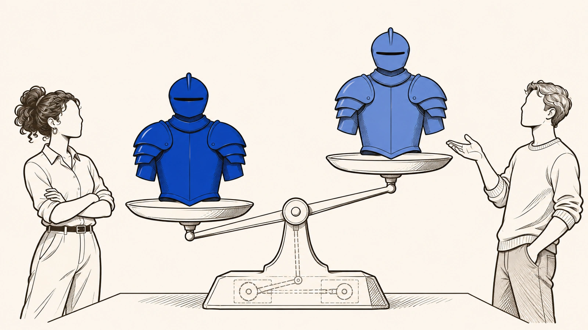

E quando uma atualização tira o que você comprou?Equivalência de valor funcional
Serviços digitais mudam o tempo todo, e isso é normal. Um jogo precisa de motor gráfico novo, de ajustes de equilíbrio, de compatibilidade com computadores diferentes.
Mas às vezes, depois de uma atualização, o item continua lá e já não serve para o que servia. Perdeu uma função, perdeu o lugar que ocupava entre os outros jogadores ou perdeu o sentido que tinha para quem comprou. Você continua com a conta, continua vendo o item e continua entrando no jogo, e mesmo assim perdeu o principal.
De onde vem
Por isso, a equivalência de valor funcional é critério de estabilidade do programa de prestação, não exigência de imobilidade do objeto. Ela permite reconhecer o óbvio sofisticado: serviços digitais contínuos mudam, mas não podem mudar de qualquer jeitop. 655
O consumidor continua formalmente “dentro” do ecossistema, continua com a conta, continua vendo o objeto, continua podendo acessar a plataforma. Ainda assim, a utilidade fruída pode ser substancialmente rebaixadap. 635
O consumidor não perde apenas "uma feature"; perde substância funcional do que comproup. 672
Equivalência de valor funcional
É o teste que pergunta se, depois da mudança, o produto ainda cumpre o mesmo papel na sua experiência. O teste é exigente. Não basta o item continuar funcionando, nem manter os mesmos números em algum atributo isolado. O que conta é o papel inteiro que ele tinha. Isso inclui a utilidade concreta no jogo, o lugar que ele ocupa entre os outros usuários e, quando isso importa para o direito, o que ele significa para quem o tem. Um item pode continuar na conta e abrir normalmente, e ainda assim ter perdido aquilo que justificou a compra.
De onde vem
O que importa é a preservação substancial do papel exercido pelo objeto na experiência adquirida, considerando sua utilidade concreta no ecossistema, sua inserção relacional no ambiente de uso e, quando juridicamente relevante, sua densidade identitária ou simbólica.p. 729
A equivalência de valor funcional não se reduz à manutenção de desempenho técnico em sentido estrito, nem à preservação quantitativa de atributos isolados. Seu conteúdo é mais exigente.p. 729
O ponto é afirmar que a licitude da alteração não pode ser aferida apenas pela subsistência nominal do objeto, pela manutenção formal de acesso ou pela persistência abstrata de alguma utilidade residual.p. 795

De onde vem
O que importa é a preservação substancial do papel exercido pelo objeto na experiência adquiridap. 729
Pagar o semestre inteiro por meio curso?
Um curso que, no meio do semestre, corta metade das aulas e continua cobrando o mesmo preço faz o que qualquer pessoa acharia errado. A lei do consumidor considera nula a cláusula que deixa o fornecedor mudar sozinho o conteúdo ou a qualidade do que vende.
Nas plataformas, o corte raramente vem com esse nome. Aparece como alcance menor, desempenho rebaixado aos poucos, funções que vão sumindo, limites mais apertados ou uso que fica mais caro para render a mesma coisa. O rótulo e o preço ficam iguais, enquanto a entrega encolhe. A lógica é a mesma do curso.
De onde vem
Se a continuidade é o regime normal, a utilidade fruída se estabiliza como expectativa de manutenção do patamar de entrega, e não como expectativa de acesso formal a um serviço que pode ser reconfigurado por conveniência do fornecedor. Por isso, o CDC trata a modificação unilateral de conteúdo ou qualidade como nulidade.p. 479
O exemplo que ele oferece, do fornecedor que reduz aulas mantendo o mesmo preço (Nunes, 2018, [p. 508-509]), funciona como régua objetiva para plataformas.p. 480
A redução raramente aparece como corte explícito de “aulas”, mas pode se manifestar como perda de alcance, rebaixamento persistente de performance, restrição cumulativa de funcionalidades, compressão de limites, reordenação de visibilidade ou alterações estruturais que elevam o custo de fruir a mesma utilidade. A lógica é a mesma. Mantêm-se o rótulo e o preço, e rebaixa-se a entrega de valor.p. 480
Como comparar o antes e o depois?
Para fazer o teste, compara-se o antes e o depois. Examinam-se as versões que importam e identifica-se o centro da utilidade que foi atingido. Depois, avalia-se o papel do objeto na experiência, olhando a utilidade, o lugar que ele ocupa entre os outros e, quando importa, o que ele significa.
Algumas perguntas ajudam. A atualização tirou uma função importante? Enfraqueceu o item a ponto de ele perder a utilidade que você pagou para ter? Mudou a tela de um jeito que bagunça o uso de todo dia? Redefiniu regras de modo a rebaixar o que tinha sido prometido como equivalente? Se a resposta for sim, a plataforma podia mudar, mas deveria ter preservado o valor do que você tinha ou aberto espaço para uma recomposição. E você não precisa provar que é dono pleno do item para reclamar disso.
De onde vem
O sinal mínimo de prova exige comparação funcional entre o antes e o depois, exame de versões relevantes, identificação do núcleo de utilidade afetado e avaliação do papel do objeto na experiênciap. 672
A força do critério aparece com nitidez em hipóteses como remoções de funcionalidades relevantes, nerfs que esvaziam utilidade adquirida, mudanças de interface que desorganizam o uso ordinário, redefinições de regras que rebaixam a equivalência do que foi prometidop. 637
A equivalência de valor funcional permite, justamente, uma posição intermediária muito mais robusta: reconhece-se que a plataforma pode alterar, mas exige-se que a alteração preserve, em termos substanciais, o valor funcional da experiência adquirida ou, não o fazendo, abra espaço a recomposição, correção, revisão ou outro remédio adequadop. 637
Não é preciso demonstrar domínio pleno sobre o objeto para sustentar que a fruição adquirida não pode ser rebaixada arbitrariamente.p. 637
Quando a atualização do celular deixa de ser melhoria?
Uma atualização de celular pode, em nome da melhoria, deixar o aparelho lento ou incompatível com aplicativos, ainda dentro do tempo de vida que se esperava dele. Ninguém sério diz que toda atualização é ilegal.
A questão é outra. É saber se a atualização comprometeu de modo relevante o uso, sem informação adequada, sem um consentimento de verdade e sem uma saída para quem foi prejudicado. Com um item digital, a estrutura é a mesma.
De onde vem
O exemplo de atualizações que degradam acessibilidade e compatibilidade em software ou firmware ajuda a visualizar a estrutura do problema. Nesses casos, ninguém discute seriamente que toda atualização seja ilícita.p. 655
O que se discute é se, sob o pretexto de melhoria, a atualização compromete de modo relevante o uso, o desempenho ou a compatibilidade de bens ainda dentro da durabilidade esperada, sem informação adequada, sem consentimento efetivo e sem vias mitigatóriasp. 655
A estrutura jurídica é a mesma em OICsp. 655
O item ainda existe, mas é o mesmo que você comprou?
Um objeto pode continuar existindo e, mesmo assim, já não ser aquilo que foi comprado. É essa perda que o teste torna visível.
E ele muda a conversa quando a empresa diz que foi só uma atualização, um ajuste ou uma evolução do serviço. A partir daí, o que importa é mostrar que o essencial do que você comprou foi preservado, e não o tamanho da complexidade técnica. Quando a equivalência se perde, a primeira resposta é devolver a função, desfazendo a mudança quando der, trocando por algo equivalente ou corrigindo a forma de atualizar, e não apenas pagar.
De onde vem
Um objeto pode continuar existindo e, ainda assim, já não ser, em sentido jurídico relevante, aquilo que foi adquirido.p. 795
Sempre que a plataforma invoca “atualização”, “ajuste” ou “evolução do serviço” para justificar alterações persistentes, o núcleo do debate deve recair sobre a demonstração de preservação substancial do feixe de fruição, e não sobre a retórica da complexidade.p. 480
A consequência institucional possível prioriza recomposição funcional, reversão técnica quando viável, substituição equivalente e correção da forma de atualização, em vez de mera monetização automática da perda.p. 746
Então mudar é ilegal?
Mudar não é ilegal. O teste não congela o serviço nem exige que a versão nova seja idêntica à antiga. Ambientes digitais precisam evoluir, se adaptar e, muitas vezes, se reequilibrar.
O que ele recusa é a mudança usada para jogar sobre você o custo de piorar seriamente o que você comprou, sem uma recomposição à altura. E, se a mudança é só de aparência e o valor simbólico não fazia parte do centro do que foi vendido, em regra ela fica de fora.
De onde vem
A mutabilidade, por si, não é ilícita.p. 729
Isso não significa exigir identidade perfeita entre versão anterior e posterior, nem impor congelamento do serviço. Ambientes digitais contínuos pressupõem evolução, adaptação e, em muitos casos, reequilíbrio interno.p. 730
O que o parâmetro recusa não é a mudança em si, mas sua instrumentalização para transferir ao consumidor o custo de reconfigurações que destroem ou rebaixam significativamente a utilidade adquirida sem recomposição compatível.p. 730
Por isso, em regra, ficam fora do alcance do conceito alterações predominantemente estéticasp. 434
O que você pode exigir?
Mudou, tem que manter o que valiaMudou, tem que manter o que valia
- Quando a atualização tira a função do que você comprou?
Quando a plataforma muda a experiência de um jeito que piora, esvazia ou desvia de verdade a função que levou você a comprar. É o item que, depois de um ajuste, continua no inventário, mas ficou tão fraco que perdeu a razão de existir, ou no recurso que deixava você fazer algo e foi retirado.
Você pode continuar dentro do jogo, com a conta, vendo o item e entrando quando quiser, e mesmo assim ter perdido o principal. Manter funcionando não é o mesmo que manter o valor.
- O que a plataforma deve preservar no item?
A plataforma deve preservar, no que é substancial, o papel que o item tinha na sua experiência. Isso inclui o que ele faz, a relação que ele cria com os outros jogadores e, quando isso importa para o direito, o que ele significa.
- Como mostrar o que mudou na utilidade do item?
Ajuda mostrar que utilidade o item tinha antes, o que mudou, qual foi o impacto concreto da mudança e por que a compensação oferecida, se houve alguma, não basta.
- Que solução pode recompor a utilidade perdida?
Em primeiro lugar, você pode pedir que a função volte. Isso pode ser desfazer a mudança quando for tecnicamente possível, trocar o item por algo equivalente ou corrigir a forma como a atualização foi feita. Dinheiro não deve ser a resposta automática. Conforme o caso, a perda pode ser tratada como vício de qualidade do produto ou do serviço, que é o nome que a lei dá ao problema que torna algo menos útil do que deveria ser.
- O jogo fica proibido de mudar?
A plataforma pode atualizar o jogo, e ninguém exige que o item fique idêntico para sempre nem que o jogo pare no tempo. Muitas mudanças são, de fato, a evolução natural do ambiente. O problema é a mudança que joga sobre você o custo de piorar de forma séria o que você comprou, sem uma recomposição à altura.
De onde vem
Sempre que a plataforma alterar a experiência de modo a degradar, esvaziar ou desviar substancialmente a função que justificou a aquisição, haverá ruptura da equivalência de valor funcional.p. 745
A força do critério aparece com nitidez em hipóteses como remoções de funcionalidades relevantes, nerfs que esvaziam utilidade adquiridap. 637
O consumidor continua formalmente “dentro” do ecossistema, continua com a conta, continua vendo o objeto, continua podendo acessar a plataforma. Ainda assim, a utilidade fruída pode ser substancialmente rebaixadap. 635
O dever de fornecimento correspondente é o de preservar, em termos substanciais, o papel funcional, relacional e, quando juridicamente relevante, simbólico do objeto na experiência do consumidor.p. 745
A prova mínima exigível requer demonstração da utilidade anteriormente incorporada ao vínculo, da mudança ocorrida, do impacto funcional concreto da alteração e da insuficiência de eventual recomposição oferecida.p. 745-746
A qualificação jurídica possível tende a recair em vício de qualidade do produto ou serviçop. 746
A consequência institucional possível prioriza recomposição funcional, reversão técnica quando viável, substituição equivalente e correção da forma de atualização, em vez de mera monetização automática da perda.p. 746
Isso não significa exigir identidade perfeita entre versão anterior e posterior, nem impor congelamento do serviço.p. 730
O que o parâmetro recusa não é a mudança em si, mas sua instrumentalização para transferir ao consumidor o custo de reconfigurações que destroem ou rebaixam significativamente a utilidade adquirida sem recomposição compatível.p. 730
Nerfs, remoções, reworks, migrações, mudanças de regra, reordenação de acessos, reconfiguração de interfaces e supressão de funcionalidades costumam ser narrados como evolução natural do ambiente. Em muitos casos, de fato, podem sê-lo.p. 730
Onde o caminho conta mais?
E quando a equivalência se perde, o que deve acontecer? Dinheiro de volta, ou o que foi comprado de volta?
O que a equivalência de valor funcional controla?
Controla a licitude das alterações unilaterais em serviços digitais contínuos. É o núcleo material de controle da mutabilidade e também orienta o remédio. O que se preserva é o papel que o objeto exercia na experiência adquirida, considerados a utilidade concreta no ambiente, a inserção relacional no uso e, quando juridicamente relevante, a densidade identitária ou simbólica.
Um objeto pode continuar existindo e, ainda assim, já não ser, em sentido jurídico relevante, aquilo que foi adquirido.p. 795
De onde vem
Serve também para orientar remédios.p. 731
A equivalência de valor funcional opera como critério de licitude das alterações unilaterais promovidas em serviços digitais contínuos que administram Objetos Imateriais de Consumo.p. 648
A equivalência de valor funcional, portanto, constitui o núcleo material de controle da mutabilidade em objetos imateriais de consumo.p. 731
O que importa é a preservação substancial do papel exercido pelo objeto na experiência adquirida, considerando sua utilidade concreta no ecossistema, sua inserção relacional no ambiente de uso e, quando juridicamente relevante, sua densidade identitária ou simbólica.p. 729
O que ela não proíbe?
A mudança, por si, não é ilícita. O critério não exige identidade perfeita entre a versão anterior e a posterior, nem o congelamento do serviço. É legítima a mutabilidade que preserva, em termos substanciais, a função do objeto na experiência do consumidor.
De onde vem
A mutabilidade, por si, não é ilícita.p. 729
Sob essa perspectiva, a mutabilidade juridicamente legítima é aquela que preserva, em termos substanciais, a função do objeto na experiência do consumidor. Isso não significa exigir identidade perfeita entre versão anterior e posterior, nem impor congelamento do serviço.p. 730
Nas situações
Os blocos seguem o enunciado do 7.1.1 a que cada um corresponde. As demais situações também operam com o conceito.
- Quando a atualização tirou o valor do que foi comprado
- Diretrizes de controle de arquitetura e governança segunda e nona diretrizes
Onde estudar a fundo?
No capítulo A equivalência de valor funcional, no caminho do jurista.
Conceito
Equivalência de valor funcional
Função no regime
Onde vive na tese
Nas leituras da tese
- Caminho do consumidorcritério operacional de verificação e recomposição
- Caminho do julgadorcritério de verificação, contenção e imputação
- Caminho do regimecontrola as alterações
Nas plataformas
As famílias de plataforma em que o conceito opera.